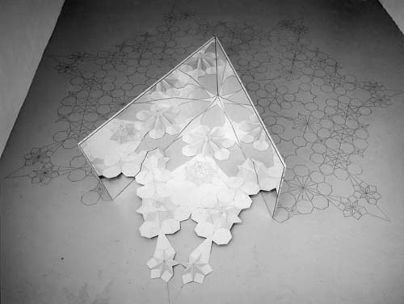

Installationen


Spielgeln & Drehen,
Installation im Ludwig Forum in Aachen 1996
Stadtplan von Köln, auf Rollen montiert, Bump&go-cars, Asphalt,
Musterzeichung auf der Wand


Installation "Gebirge" im Neuen Aachener Kunstverein 1993 Dias mit Musterzeichnungen über Luftfotos, in Betontrichter montiert.
Unten: Spiegeln und
Drehen (7/5/4)
Kartonmontage, Bleistiftzeichnung auf dem Boden, Spiegel

